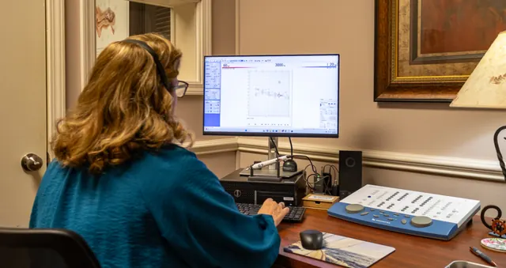
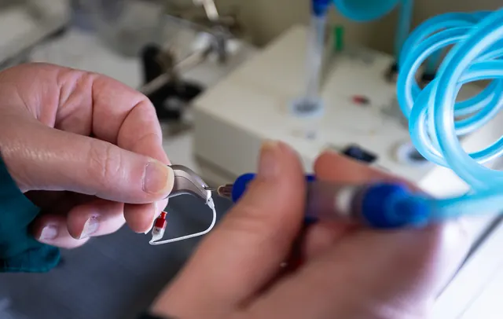
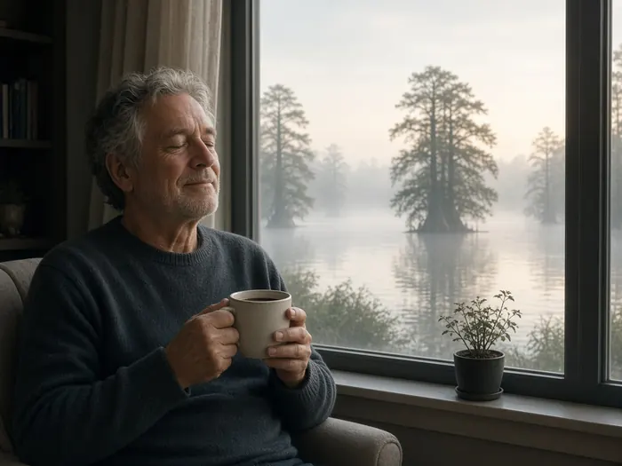
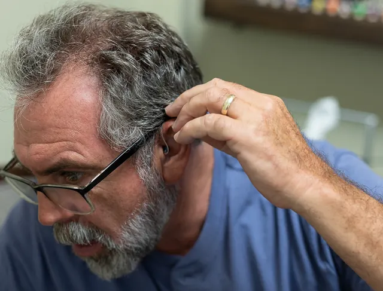
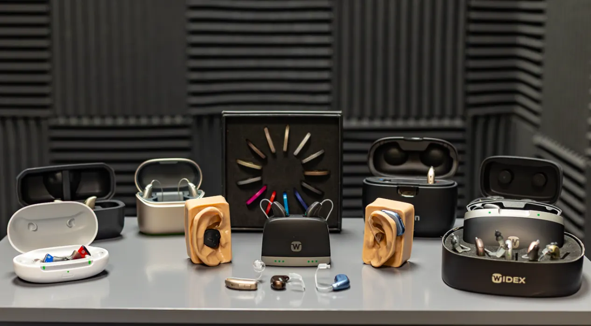
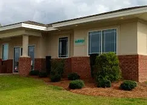
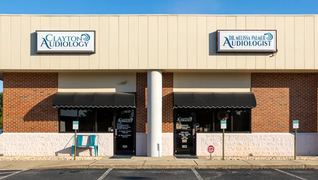
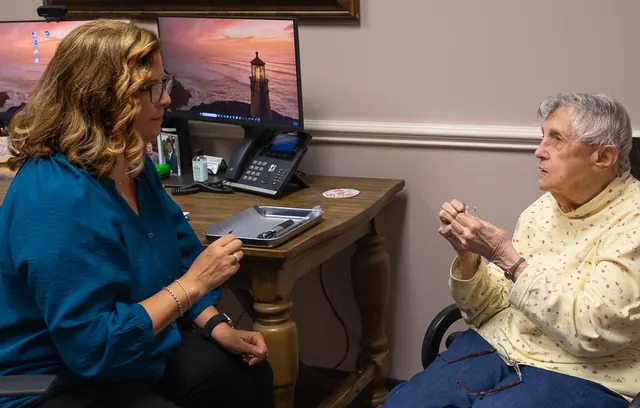

Audiologist in Rocky Mount, NC
Never miss another word
Carolina Audiology is Dr. Melissa Palmer's hearing practice on Capital Drive in Rocky Mount, caring for children and adults across Nash and Edgecombe counties.
- Doctor of Audiology since 1996
- Dr. Palmer is a certified Tinnitus Retraining Therapy provider
- Sister practice of Clayton Audiology
What brings you in?
Pick the one that sounds most like you. We will show you what the visit looks like, what to bring, and start the request for you.

Hearing evaluation
- What we will do
- We talk about where you struggle to hear, look in your ears, measure how you hear tones and speech, and explain your results in plain language.
- What to bring
- A list of your medications, any past hearing test results, and a family member if you would like a second set of ears.

Hearing aid check and repair
- What we will do
- We clean and check your hearing aids, adjust the settings, and help with a manufacturer repair when a part needs replacing.
- What to bring
- Your hearing aids, the charger or spare batteries, and the make and model if you know it.

Illustrative imageTinnitus evaluation
- What we will do
- We measure your hearing and your tinnitus, then talk through options such as sound therapy and hearing aids with tinnitus features. Tinnitus services at the Rocky Mount office: to confirm
- What to bring
- A few notes on when the sound is loudest and what makes it better or worse.

VNG dizziness testing
- What we will do
- VNG testing looks at how your inner ear and your eyes work together to keep you steady, so you and your doctor can understand what is going on.
- What to bring
- A list of your medications, and a ride home if you would like one. We share any preparation steps when we book your test.
Hearing aid consultation
- What we will do
- We match technology to your hearing results, your routine and your budget, including smartphone linked hearing aids that stream calls, TV and music.
- What to bring
- Your recent hearing test if you have one, your phone, and the places you most want to hear better.

Custom ear protection
- What we will do
- Ear protection shaped to your ears for hunting, music, swimming and loud work, so it stays comfortable and sealed.
- What to bring
- Tell us what you are protecting against, from deer stands to drum kits.
Helping people hear since 1996
Dr. Melissa Palmer, Au.D., CCC-A
Doctor of Audiology and owner. Dr. Palmer provides comprehensive hearing healthcare for children and adults, specializing in diagnostic hearing evaluations, tinnitus assessments, hearing aid fittings and auditory processing evaluations.
Long term relationships
Known for her patient centered approach, Dr. Palmer builds long term relationships with her patients through compassionate care, thorough follow up and ongoing education.
Beyond the clinic
From 2012 to 2019 Dr. Palmer traveled on mission trips to Nicaragua, providing hearing care and hearing aids to children and adults in need, supported by donations from her patients, friends and family.
Meet Dr. PalmerCare for every stage
From a first hearing test to years of tune ups, your hearing care stays in one place, close to home.
All services
Hearing aid brands
- Widex
- Starkey
- Phonak
- Signia
- Oticon
- Brands carried in Rocky Mount: to confirm
Working with several manufacturers means the recommendation can follow your ears, your routine and your budget.
Your first visit
Hearing loss can feel like a hundred small worries. One unhurried appointment turns them into a clear plan.
What to expectTwo practices, one family
Carolina Audiology in Rocky Mount is the sister practice of Clayton Audiology in Clayton. Both are family owned and led by Dr. Melissa Palmer.
A few lines about the Palmer family and why Rocky Mount, in your own words.



Kind words from patients
Three of your favorite Google reviews will go here, in each patient's own words.Patient first name, town
Read our Google reviews (link to confirm)
Questions we hear
Plain answers about hearing care in Rocky Mount. Call us if yours is not here.
Do I need a referral to see an audiologist?
Many patients can book a hearing test directly. Some insurance plans ask for a referral before they pay, so call us and we can help you check what your plan needs.
Does Medicare cover hearing tests?
Medicare Part B covers diagnostic hearing evaluations. Since 2023, Medicare also lets you see an audiologist once every 12 months for certain non urgent hearing concerns without a doctor's order. Original Medicare does not cover hearing aids, though many Medicare Advantage plans include a hearing benefit.
How much do hearing aids cost?
Cost depends on the technology level and style that suit your hearing and your routine. Dr. Palmer explains your options and their prices before you decide, and we help you understand your insurance benefits and payment choices.
What happens at my first visit?
We talk about your hearing and health history, test your hearing, and explain the results in plain language with a plan. Family members are welcome to join you.
Can tinnitus be treated?
There is no single cure for tinnitus, but many people find real relief. Options include sound therapy, hearing aids with tinnitus features and Tinnitus Retraining Therapy. Dr. Palmer is a certified provider of Tinnitus Retraining Therapy. Tinnitus services at the Rocky Mount office: to confirm
Is Carolina Audiology related to Clayton Audiology?
Yes. Carolina Audiology in Rocky Mount is the sister practice of Clayton Audiology in Clayton, NC. Both are owned by Dr. Melissa Palmer, Au.D., CCC-A.
Do you see patients from Tarboro, Wilson and Nashville?
Yes. Our office on Capital Drive in Rocky Mount welcomes patients from across Nash and Edgecombe counties, including Tarboro, Wilson and Nashville.
What are your office hours?
Our Rocky Mount office hours are Monday to Thursday, 9 AM to 5 PM. Call 252-977-4327 to book.
Request your visit
Tell us a little and our front desk will call you to find a time. Prefer to talk now? Call 252-977-4327.
- 1 Send this short request.
- 2 We call you back to pick a day and time.
- 3 You come in. Bring a family member if you like.